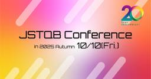

直近1週間の更新
8/25 (月)

gpt-oss:20bでpromptfooのテストケースを試してみる  Zennの「Test」のフィード
Zennの「Test」のフィード
書き手・読み手のモチベーションgpt-ossをちょっと使ってみたいapache2.0なので、もしかしたら組み込みや自社利用もあるかももし使うとなった場合APIに比べて、アラインメントはどんな感じでされているのかせっかくなんで、CI的なテストも回していきたい、promptfooとか使ってみて promptfoohttps://www.promptfoo.dev/promptfooは、生成AIやLLMを評価・テストするためのオープンソースツールユーザーが用意したプロンプトや期待する出力をもとに、複数のモデルに対して同じ条件でテストを実施し、精度や一貫性...
11時間前

【Go】Goのテストに入門してみた！ ~環境変数編~ Zennの「Test」のフィード
はじめに前回は「httptest」を見ていきました。今回は「環境変数のセット」に入門します！前回の記事はこちら！ この記事でわかることGoのユニットテストにおける環境変数のセットの仕方と T.Setenv の特徴Goのベンチマークテストにおける環境変数のセットの仕方と B.Setenv の特徴 ユニットテストで環境変数を設定するには？テストをする際に、環境変数に依存した処理をテストすることがあるかと思います。ユニットテストで一時的な環境変数を設定するには、Go 1.17から導入された T.Setenv を使います。T.Setenv のドキュメントには以下...
16時間前
8/24 (日)

感情のシフトチェンジ  yuden
yuden
私たちはプラスな感情をポジティブと、マイナスな感情をネガティブと表現します。そしてこの感情上下を日々コントロールし、時にはこの波にコントロールされています。ポジティブとネガティブは別である続きをみる
1日前

ソフトウェアテスト徹底指南書 〜開発の高品質と高スピードを両立させる実践アプローチ の感想 1
1 テストする人。
テストする人。
※本文にはほとんどふれていないエントリーです。 ソフトウェアテスト徹底指南書 〜開発の高品質と高スピードを両立させる実践アプローチ gihyo.jp という本が今年発売されました。 全43章というのに周囲がどよめいたとんでもない本です。 なんとか全部読み終わった（と言えないので、ページを全部めくったの方が近いと思う）ので、感想エントリー 一言でいうと、著者の井芹洋輝さん（私はいつも いせりんと呼んでいるので以降いせりんで）は国宝な本を出しちゃったな。って感想。 いせりんは、尊敬するソフトウェアテスト技術者の一人で、彼の素晴らしさは、圧倒的な知識量と探究心と守備範囲の広さ、そして丁寧で誠実、誰に…
1日前

full-stack テスト Zennの「Test」のフィード
前提Fullstack: FEとBEをそれぞれ開発してるBEはclean architectureに準拠API定義書を満たす形で、FEとBEは実装を進めるunit test各レイヤーで、エッジケースも含めてビチビチにprogramでテストするホワイトボックス現在の形のスナップショットを撮るような目的integration testBE、FE内でそれぞれレイヤーを接続して、機能することを確認するブラックボックス。実際にリクエスト投げて動くかどうかみる。この時点で、理論上は、FEとBEを繋げれば全てがうまく動くただ、実際は、FEとBEチームで仕様の捉え方に...
2日前

8/22 (金)
【Go】Goのテストに入門してみた！ ~httptest編②~ Zennの「Test」のフィード
はじめに前回は「httptest」を見ていきました。今回も「httptest」に入門します。前回の記事はこちら！ この記事でわかることGoの標準パッケージである httptest の概要や役割httptest を使ったHTTPハンドラーのテスト方法POSTメソッドでハンドラーをテストする際の注意点 httptestとは？httptest はGoに標準搭載されているパッケージです。（net/http/httptest が該当します。）httptest を使うことで、実際にHTTPサーバーを立ち上げることなく、HTTPハンドラーやWebアプリケーションの...
4日前
8/21 (木)
Next.jsへの移行をほぼ1週間でやりきる 1
Zennの「Test」のフィード
どうもこんにちは、たくびーです。!この記事はAIを使わずに書かれています。弊社ではいくつかのアプリケーションが存在し、それらをモノレポで管理しています。今回はそのうちの1つのアプリケーションをReact + WebpackからNext.jsへ移行を行いました。 動機弊社にはいくつかのアプリケーションがあります。ここでは話を簡単にするために以下のようにしたいと思います。app1(Next.js Pages Router)app2(Next.js Pages Router)app3(React + Webpack) きっかけapp3以外のアプリケーションはNe...
4日前
「人事は一生探索が必要な仕事」5,000人組織の変革をリードする“事業視点の戦略人事”とは PTW／ポールトゥウィン【公式】
創業から30年、成長を続けてきたポールトゥウィンは、2030年代に向けた組織進化プロジェクト「Shape the New PTW」を掲げている。その旗振り役を担うのは、採用・育成・組織づくりを通じて変革をリードする人事部門だ。ポールトゥウィンの成長を牽引するリーダーたちを紹介する「リ―ダーズインサイト」。今シリーズでは、入社2年目にして人事部門の執行役員を務める広瀬俊也を特集する。社員数一桁のスタートアップ企業からキャリアをスタートし、業界黎明期から組織を牽引して取締役として上場も経験した。そんな彼がなぜ大企業の人事という道を選び、何を変えようとしているのか。「人事は一生探索が必要な仕事」という彼の言葉に込められた、ビジネスパーソンとしての美学に迫る。続きをみる
4日前
8/20 (水)
AppiumでAndroidのToastを無理やり取得する Zennの「Test」のフィード
はじめにAppiumを使用してAndroidアプリのテストを行う際、Toastの要素が表示されているかを確認できないという問題がありました。Appiumのバージョンがv1系ですが、同じ内容のissueがあります。例えば、以下のようにToastの要素の表示を確認しようとしてもselenium.common.exceptions.StaleElementReferenceExceptionが発生します。from appium.webdriver.common.appiumby import AppiumByfrom selenium.webdriver.support.wait ...
5日前
【第3回】開発組織に品質技術を伝えるための2つのスキル｜QA活動のスキル伝達「イネイブリングQA」  品質 | Sqripts
品質 | Sqripts
イネイブリングQAについての連載、第3回となる今回は、イネイブリングQAに必要なスキルについて考えていきましょう。 前回の記事では、開発者に対するさまざまな「イネイブリング圧」がある状況のなか、単純に品質に関する知識やス...The post 【第3回】開発組織に品質技術を伝えるための2つのスキル｜QA活動のスキル伝達「イネイブリングQA」 first appeared on Sqripts.
5日前
【Go】Goのテストに入門してみた！ ~httptest編①~ Zennの「Test」のフィード
はじめに前回は「Fuzzingテスト」を見ていきました。今回は「httptest」に入門します。前回の記事はこちら！https://zenn.dev/tmyhrn/articles/f329b29e92faa7 この記事でわかることGoの標準パッケージである httptest の概要や役割httptest を使ったHTTPハンドラーのテスト方法 httptestとは？httptest はGoに標準搭載されているパッケージです。（net/http/httptest が該当します。）httptest を使うことで、実際にHTTPサーバーを立ち上げることなく...
6日前
新卒向けのソフトウェアテスト入門の資料が公開されました！  テスターちゃん【4コマ漫画】
テスターちゃん【4コマ漫画】
こんにちは！ 作者です。 2025/8月現在勤めている会社で、開発エンジニアの新卒研修を担当していました。 資料が公開されましたのでここにも共有します。 資料や動画は、ぜひぜひ勉強会や社内の研修などでご自由にお使いいただければ幸いです～！ ただし、以下の注意は守ってくださるようお願いします。 受講者から参加費や授業料など金銭を集めるような場での利用（会場費や飲食費など勉強会の運営に必要な実費を集める場合は問題ありません） 出典を削除または改変しての利用 QAとは&ソフトウェアテスト入門 勉強会の動画(2時間くらいあります) 他、開発エンジニア向けの新卒研修全部 QAとは&ソフトウェアテスト入門…
6日前
8/19 (火)
「UT(単体テスト)って何？」から始める、JUnit 5 & Mockito 入門~実践
Zennの「Test」のフィード
はじめにバグ修正コストは「要件定義時を 1 とすると運用時には 100 倍」とも言われる。単体テスト（Unit Test）は、クラスや関数など最小単位の振る舞いを検証する工程だ。テストピラミッドで最下層に位置し、数と実行速度を武器にプロダクト全体の品質を支える。「仕様をあとから変更できる安心感」──これこそ単体テストが開発者にもたらす最大の価値である。本記事は JUnit 5 と Mockito を軸に、環境構築から実践的な応用技法まで解説するハンズオンガイドである。 UT(単体テスト)とは単体テスト（Unit Test） は、ソフトウェア開発において、プログラムの最小...
6日前
もうテストで迷わない。新人エンジニアの同志に贈る、『テストの教科書』を読んで見つけた「2つの観点」と「3種の神器」  ソフトウェアテストタグが付けられた新着記事 - Qiita
ソフトウェアテストタグが付けられた新着記事 - Qiita
0. はじめに新卒エンジニアの皆さん、この瞬間に心当たりはありませんか？先輩「よし、この機能の実装OKだね！じゃあ、テストお願い！」自分「はい！（よっしゃ終わったー！）」～数分後～自分「（仕様書の前で固まりながら）…で、何をテストすればいいんだ…？」僕は、...
6日前

JSTQB(ソフトウェアテスト技術者資格認定組織)主催の無料オンラインイベント「20周年記念 JSTQB カンファレンス in 2025 Autumn」のご案内  特定非営利活動法人ソフトウェアテスト技術振興協会【プレスリリース】 by PR TIMES
特定非営利活動法人ソフトウェアテスト技術振興協会【プレスリリース】 by PR TIMES
[特定非営利活動法人ソフトウェアテスト技術振興協会][画像: https://prtimes.jp/i/54604/45/resize/d54604-45-ab9320aff39390400e11-0.png ]JSTQB（ソフトウェアテスト技術者資格認定組織）は、2025 年 10 月 10 日 （金） に設立20周年を記念し「JSTQB 20周年記念...
6日前
Swift Testingの並列テスト実行にまつわる落とし穴 Zennの「Test」のフィード
こんにちは。株式会社PREVENTでiOSエンジニアをしている佐藤です。弊社で開発しているiOS版のMystarアプリは、最近テストフレームワークをXCTestからSwift Testingへ移行しました。その対応の中で、並列テストにまつわる落とし穴にハマってしまい、やや大変だったのでその時の知見を記事として共有しようと思います。 並列テストそのものの注意点Swift Testingの大きな特徴の一つとして、デフォルトでテストケースの並列実行があります。テストケースを並列実行できると、テストの実行時間が高速化できるので、基本的には積極的に導入したいです。しかし、テストの実装...
6日前
【実案件使用】Cursorプロンプト × コード公開！ ②バグ修正編 1 Zennの「Test」のフィード
はじめにこんにちは。エンジニア 兼 講師のShotaです。普段はエンジニアとしてAIツールを実案件に適用しながら開発を行い、同時に講師として得られた知見を体系化して受講生の方にお伝えする活動をしています。AIツールを実案件に適用する際に事前に知っておくべき実践的なTipsのシリーズ第4回。今回のテーマは「【実案件使用】Cursorプロンプト × コード公開！ ②バグ修正編」です。なお、本記事は私が提供しているAI駆動開発実践コースの内容から一部を抜粋して無料公開しているもので、実際の開発現場での知見に基づいています。 前回の振り返りと課題前回は、AIツールを使ったリファ...
7日前
【エンジニア必見】テストの真価は安心開発にあり！新人を支える環境づくりの実例 1 Zennの「Test」のフィード
【エンジニア必見】テストの真価は安心開発にあり！新人を支える環境づくりの実例 💭 この記事を書こうと思ったきっかけ※この記事はテストの書き方や技術的な手法について解説するものではありません。テストが持つ「心理的な効果」や「チーム文化への影響」について、体験談をもとにお話しします。技術顧問として多数の企業の案件に関わっているのですが、現場を見るたびに感じることがあります。それは「テストが整備されているチーム」と「そうでないチーム」での、新しいメンバーの成長スピードの圧倒的な違いです。特に、コード修正時の不安感に大きな差が出ます。「このコード修正、他の機能に影響しないかな......
7日前
VASTのテスト画面をテストしやすいよう大きくする方法 Zennの「Test」のフィード
モチベーションVASTの動作確認で下記テストページを使う際、画面が小さくて見切れるケースがあるので、テスト画面を大きくしてテストしやすくしたいhttps://googleads.github.io/googleads-ima-html5/vsi/ やり方ブラウザでconsole画面を出す(F12)コンソール画面でコピペできるようにするallow pastingconsole画面で下記を入力し、サイズを変更する(function() { const target = document.querySelector("#video-player video"...
7日前